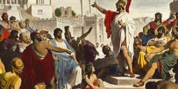
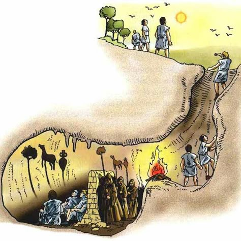

PLATÓ
EL MÓN DE LES IDEES
Una recerca de la veritat, la justícia i el coneixement més enllà de les aparences sensibles.
Breus Dades Biogràfiques
Plató (427–347 aC) va néixer a Atenes en el si d’una família aristocràtica. El seu nom real era Aristocles, però el sobrenom “Plató” podria fer referència a la seva complexió robusta.
Va rebre una formació d’elit en disciplines com la política, la dialèctica i les matemàtiques. Inicialment es va interessar per la filosofia a través de Cràtil, però la influència decisiva va ser la del seu mestre Sòcrates.
"La condemna a mort de Sòcrates marcarà profundament el pensament de Plató i el seu rebuig de la política atenenca."
Després de la mort de Sòcrates, Plató va viatjar al sud d’Itàlia, on va entrar en contacte amb el pensament pitagòric i les doctrines òrfiques.
L’Acadèmia (387 aC)
Escola fundada a Atenes amb objectiu central: formar polítics i governants.
Lema: «Saber per posseir el poder»
Al pòrtic: «Que ningú no entri aquí que no sàpiga matemàtiques» — les matemàtiques com a propedèutica filosòfica.
El seu projecte filosòfic té una clara finalitat política: trobar les bases d’un Estat just.

Context Històric i Filosòfic
La filosofia de Plató neix d’una crisi profunda de la ciutat d’Atenes.
- ▸ Guerres del Peloponès: conflicte entre Atenes i Esparta que provoca la decadència política i moral de la polis.
- ▸ Els Trenta Tirans: govern oligàrquic violent que Plató rebutja malgrat la seva proximitat familiar, degut als seus abusos.
- ▸ Democràcia atenenca: Plató la critica per estar dominada per la manipulació, la demagògia i la ignorància.
- ▸ La Carta Setena (Carta VII): testimoni autobiogràfic de Plató. Explica que fou convidat a participar en el govern dels Trenta Tirans, però s'hi va negar, escandalitzat pels seus excessos. El 403 aC, Trasibul liderava la revolta democràtica que els enderrocà.
- ▸ Mort de Sòcrates (399 aC): l'home que Plató considerava «el més just i savi de la ciutat» és condemnat per la democràcia. Punt de ruptura definitiu: Plató decideix no participar en política directament, però escriu La República.
Els Sofistes: el gran adversari
Plató construeix la seva filosofia en oposició als sofistes, a qui acusa de destruir la veritat i la justícia.
La gran tesi política
«Fins que els filòsofs no siguin reis de les ciutats, o els que ara s'anomenen reis i governants no siguin filòsofs veritables i capaços, i el poder polític i la filosofia no coincideixin en la mateixa persona… les ciutats no tindran repòs dels seus mals, ni tampoc, crec jo, el gènere humà.»
— Plató, La República, Llibre V, 473c–d
El Mite de la Caverna
Una al·legoria sobre la ignorància, el coneixement, l'educació i el deure polític del filòsof.

1. La Ignorància
Els presoners confonen les ombres amb la realitat. Viuen dins el món de les aparences.
2. L'Alliberament
L'ascens cap a la llum exigeix esforç. Educar és predisposar l'ànima cap a la veritat.
3. La Veritat i el Retorn
La contemplació del Sol revela la Idea del Bé. Però el filòsof ha de tornar a governar.
Descodificació simbòlica
⛓ Cadenes
Prejudicis i opinió rebuda dels sentits.
🔥 Foc
Coneixement sensible, parcial i enganyós.
☀️ Sol
La Idea del Bé — font de tot coneixement.
🧑🎓 Presoner alliberat
El filòsof en la seva ascensió cap al saber.
↺ Retorn a la caverna
Deure polític del filòsof: governar i guiar els altres, malgrat la incomprensió i el rebuig.
Dos àmbits de realitat
🌑 Dins
- ▸ Món sensible
- ▸ Llum del foc
- Ombres → Eikasia
- Objects artificials → Pístis
☀️ Fora
- ▸ Món intel·ligible
- ▸ Llum del sol
- Reflexos → Diànoia
- Idees (obj. naturals) → Noesi
Els quatre graus del coneixement
Quatre lectures del mite
🌌 Metafísica
Dos móns: el sensible (aparences) vs. l'intel·ligible (Idees eternes).
🧠 Epistemològica
El pas de la Doxa (opinió) a l'Episteme (ciència i veritat).
🧑 Antropològica
Educar és girar l'ànima cap a la veritat: Influència pitagòrica - ascetisme ànima/cos.
🏛️ Política
El filòsof ha de tornar i governar, malgrat el rebuig dels altres.
Finalitat última del mite
Postular l'existència de valors universals que guiïn el governant per actuar justament en la vida pública i privada.
La Teoria de les Idees
Plató distingeix entre dues realitats: el món que percebem i el món que és veritable.
Què és una «Idea»? — La clau del concepte
Idea (grec: eidos = «forma, aspecte o semblant»): designa els conceptes universals que buscava Sòcrates, als quals Plató dota d'existència separada i independent, tant de les coses com del pensament. Per això s'escriu amb majúscula inicial i se li atribueix existència objectiva i independent.
Món Sensible
És el món que percebem amb els sentits. Tot és canviant, imperfecte i enganyós.
- ▸ Objectes materials
- ▸ Canvi constant
- ▸ Imperfecció
- ▸ Accesible pels sentits
- ▸ Coneixement: doxa
Món Intel·ligible
És el món de les Idees: realitats eternes, immutables i perfectes. És l'autèntica realitat
- ▸ Idees (formes — eide): úniques, idèntiques
- ▸ Eternitat i immutabilitat (influència de Parmènides)
- ▸ Màxima realitat: l'autèntic Ser
- ▸ Accessible únicament amb la Raó
- ▸ Coneixement: Episteme (ciència)
La Idea del Bé
És la Idea suprema, font de totes les altres Idees i de la veritat mateixa.
"El visible és només una ombra del que és real."
Relació entre Idees i coses
Les coses no tenen realitat per si mateixes: són en la mesura que es relacionen amb les Idees.
Mimesi (imitació)
Les coses són còpies imperfectes de les Idees. Igual que les ombres en la caverna, imiten una realitat superior.
Méthexis (participació)
Les coses són el que són perquè participen de les Idees. La seva essència depèn d’aquesta participació.
La Cosmogonia: origen del món sensible
Caòtica i en moviment
Models perfectes
Intel·ligència ordenadora
Dependència Ontològica
Les Idees són la causa del ser de les coses. Les coses només existeixen en la mesura que participen de les Idees.
Dependència Gnoseològica
Només podem conèixer les coses si coneixem les Idees. El coneixement veritable depèn de la comprensió del món intel·ligible.
"El món sensible només té sentit a la llum de les Idees."
El Coneixement en Plató
Conèixer no és aprendre, sinó recordar allò que l’ànima ja sabia.
Teoria de la Reminiscència
Plató defensa que l’ànima ha contemplat les Idees abans d’unir-se al cos. Conèixer és recordar (anamnesi) aquestes veritats oblidades.
Font 1 — Tradició orficopitagòrica
L'ànima és immortal i originalment habitava el món de les Idees, on les contemplava. En encarnar-se en un cos (doctrina soma-sema: el cos com a presó), oblida tot el que sabia. Les coses sensibles evoquen (anamnesi) el record de les Idees.
Font 2 — Mètode socràtic (maièutica)
A través del diàleg i preguntes adequades, l'alumne progressa des del particular al general fins a definir els conceptes universals. Si és possible, és perquè les Idees ja eren a la seva ànima, oblidades.
La Línia del Coneixement
| Àmbit | Objecte | Grau de coneixement | Mètode | Disciplina |
|---|---|---|---|---|
| Món Intel·ligible | Idees (Bé, Bellesa, Justícia…) | Noesi / Intel·ligència | Dialèctica | Filosofia |
| Entitats matemàtiques | Diànoia / Pensament discursiu | Axiomàticodeductiu | Matemàtiques i Geometria | |
| Món Sensible | Coses (animals, plantes, fabricades) | Pístis / Creença raonable | Hipoteticodeductiu | Física |
| Imatges (ombres i figures) | Eikasia / Figuració | Conjectura | Art i Literatura |
⚠️ Nota PAU — Traduccions alternatives
Segons la traducció del text que aparegui a l'examen, els mateixos conceptes poden aparèixer amb noms diferents:
DOXA (Opinió)
Coneixement de les ombres i imatges → il·lusió
Coneixement dels objectes físics → creença
EPISTEME (Ciència)
Coneixement matemàtic → raonament
Coneixement de les Idees → intel·ligència pura
La Dialèctica — El mètode del filòsof
Procés pel qual l'ànima s'eleva des de la visió sensible fins a la visió intel·lectual de les Idees:
Des del sensible (eikasia, pístis) fins a la contemplació de la Idea del Bé (noesi). L'ànima va deixant enrere la multiplicitat sensible per assolir la unitat del real.
Des de la comprensió de la Idea del Bé, l'ànima comprèn l'ordre de la totalitat de l'Ésser i pot retornar a governar el món sensible.
El «Racionalisme» de Plató — Clau per a la PAU
Relació amb el Mite de la Caverna
Eikasia
Pistis
Diànoia
Noesis
"Conèixer és recordar el que l’ànima ja ha vist."
L’Ànima en Plató
L’ésser humà és una realitat dual: cos i ànima, on aquesta última és la veritable essència.
Dualisme antropològic
Plató defensa que l’ésser humà està format per dues realitats diferents: el cos, material i imperfecte, i l’ànima, immaterial i immortal.
El cos és una presó per a l’ànima, que limita el seu accés al coneixement veritable.
"L’ànima ha de separar-se del cos per assolir la veritat."
Parts de l’ànima
Busca la veritat → ha de governar
Valor, coratge → ajuda la raó
Desigs i passions → ha de ser controlada
El mite del carro alat
Part noble (irascible)
Raó (guia)
Desigs (concupiscible)
Virtuts de l’ànima
Raó — saber el que s'ha de fer i quan
Irascible — valor per executar les decisions de la raó
Concupiscible — control dels plaers i apetits
La Política en Plató
La justícia consisteix en l’harmonia de la ciutat, quan cada classe compleix la seva funció.
Crítica de Plató a la democràcia atenenca
Els càrrecs polítics eren exercits per ciutadans sense formació específica, triats per sorteig. Plató defensa una idoneïtat natural: només una minoria pot assolir el veritable coneixement de les Idees.
Votació de la majoria. Una ciutadania amb baixa formació és manipulable pels oradors demagogs. Les decisions s'han de prendre guiades per la Idea del Bé, universal i immutable.
Origen de l'Estat
L'ésser humà no és autosuficient: necessita els altres per satisfer les seves necessitats vitals. Aquesta interdependència origina la societat i l'Estat. La política té per finalitat organitzar els esforços comuns de la millor manera per a tothom — el que avui anomenaríem divisió social del treball.
Estructura de la Ciutat Ideal
Governants (Filòsofs)
Coneixen el Bé → han de governar
Guardians
Defensen la ciutat i mantenen l’ordre
Productors
Satisfan les necessitats materials
Noms en grec
▸ Governants: Àrjontes
▸ Guardians: Phylakes
▸ Productors: Demiurgoi
Règim especial per a les classes superiors
▸ Sense propietat privada — comunitat de béns per evitar la corrupció.
▸ Sense família pròpia — els guardians i governants viuen separats de la resta.
Igualtat de gènere — Una posició revolucionària
Plató defensà —trencant amb el pensament de la seva època— que l'educació havia de ser igual per a homes i dones, i que les dones podien exercir qualsevol de les tres funcions socials en igualtat de condicions.
Correspondència entre Ànima i Ciutat
Governants
Guardians
Productors
La Justícia
La justícia no consisteix en la igualtat, sinó en l’harmonia.
Quan això es compleix, la ciutat és justa — igual que l’ànima.
Degeneració dels règims polítics
| Règim (etimologia) | Qui governa | Característiques |
|---|---|---|
| Aristocràcia / Monarquia ✓ aristos = el millor / monos = un |
El millor / els millors | Govern guiat per la Idea del Bé. L'estat perfecte — pot ser un sol governant (monarquia) o un grup dels millors (aristocràcia, de mèrit, no de casta). |
| Timocràcia timé = honor |
Ambiciosos / guerrers | Govern dels que busquen honor i rendes. Els més ambiciosos es preocupen per ells mateixos i per la guerra i la glòria personal. |
| Oligarquia oligos = pocs |
Rics / pocs | La cobdícia substitueix la virtut. Manen els explotadors. El poble, manipulat i explotat, finalment es revolta. |
| Democràcia demos = poble |
El poble (no instruït) | Igualitarisme extrem i llibertinatge: cadascú fa el que vol. La direcció recau en els menys virtuosos i preparats → demagògia. |
| Tirania ✗ forma extrema |
El tirà | La pitjor forma de govern. La llibertat mal exercida obliga a reclamar un «salvador» carismàtic que acaba controlant, executant i atemoritzant tothom. |
"La ciutat justa és aquella on cadascú fa el que li correspon."
L'Ètica en Plató
La virtut és l'excel·lència de cada part de l'ànima. La justícia és la seva harmonia.
La Virtut — Areté
La virtut (areté = excel·lència) es defineix com realitzar la funció pròpia de cada part de l'ànima de manera adequada, respectant la jerarquia i sense interferir en les altres.
Part racional — saber el que s'ha de fer en cada circumstància i triar el moment oportú per dur-ho a terme.
Part irascible — tenir el valor per executar les decisions preses per la raó i preservar l'opinió correcta.
Part concupiscible — controlar els plaers i apetits, no pertorbar les altres parts de l'ànima.
La Justícia en l'Individu i la Felicitat
El criteri per determinar si un individu és just és el mateix que per a l'Estat: cada part de l'ànima fa el que li correspon, practica la seva virtut i no interfereix en les altres, respectant la jerarquia: l'aspecte racional dirigeix i controla els altres dos.
L'Isomorfisme Platònic
La mateixa estructura tripartida, la mateixa lògica de virtut i harmonia s'aplica als tres nivells de la realitat:
Matèria + Idees + Demiürg → ordre i harmonia universal
Productors + Guardians + Governants → justícia social
Concupiscible + Irascible + Racional → harmonia individual
L’Educació del Filòsof
El coneixement és un camí d’ascens des de la ignorància fins a la contemplació del Bé.
L’Ascens cap al Coneixement
1. Ignorància (Caverna)
L’individu viu entre ombres i creences, sense accedir a la veritat.
2. Educació inicial
Música i gimnàstica → formació del cos i del caràcter.
3. Matemàtiques (diànoia)
Desenvolupament del pensament abstracte i racional.
4. Dialèctica (noesis)
Coneixement directe de les Idees i comprensió de la realitat.
5. Contemplació del Bé
Punt culminant del coneixement: la font de tota veritat.
El Retorn del Filòsof
El filòsof no pot quedar-se en la contemplació del Bé.
Tot i que això implica incomprensió i rebuig.
Síntesi del pensament platònic
| Àmbit | Metafísica / Ontologia | Gnoseologia |
|---|---|---|
| Món Intel·ligible | Idees (essències eternes, universals) → Autèntica realitat | Episteme (ciència): diànoia + noesi → Raó |
| Món Sensible | Coses (canviants, corruptibles) → Aparences | Doxa (opinió): eikasia + pístis → Sentits |
| Part de l'ànima | Antropologia / Ètica | Política |
|---|---|---|
| Racional | Auriga → Virtut: Saviesa (sophia) → Felicitat | Governants (Àrjontes) → Filòsof Rei |
| Irascible | Cavall bo → Virtut: Coratge (andreia) | Guardians (Phylakes) |
| Concupiscible | Cavall dolent → Virtut: Temprança (sophrosyne) | Productors (Demiurgoi) |
“Només qui ha vist el Bé
pot governar amb justícia.”
— Idea central de la filosofia política de Plató